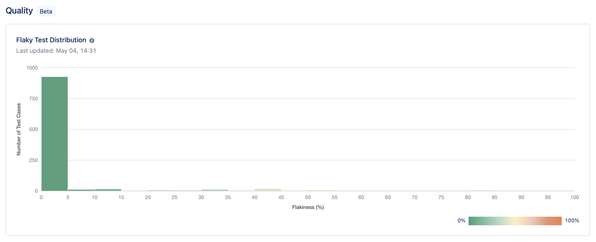

Quality reports
Overview
The Quality dashboard allows you to monitor the quality of test cases based on their execution history.
The quality is measured by grouping the number of executed test cases in each flakiness category (flakiness level: 0% - 5%, 5% - 10%, …, 95% - 100%).

Insights
The flakiness of a test case is calculated based on the number of failed/passed statuses the test case has.
A flakiness probability of over 50% means that the quality of this test case is bad since it performs inconsistently over time, which prompts further investigation to find the root cause to resolve it immediately.
Meanwhile, if there is an incredible number of executed test cases with less than 50% of flakiness, it could mean that the quality of test cases is good enough.
Since the quality of test cases tells you how good/bad your product is, predicting the efforts to spend on debugging or addressing the problem of the bad test quality, you could plan your production cycle accordingly to make sure that the product deployment would still meet the timeline you and your team expect.